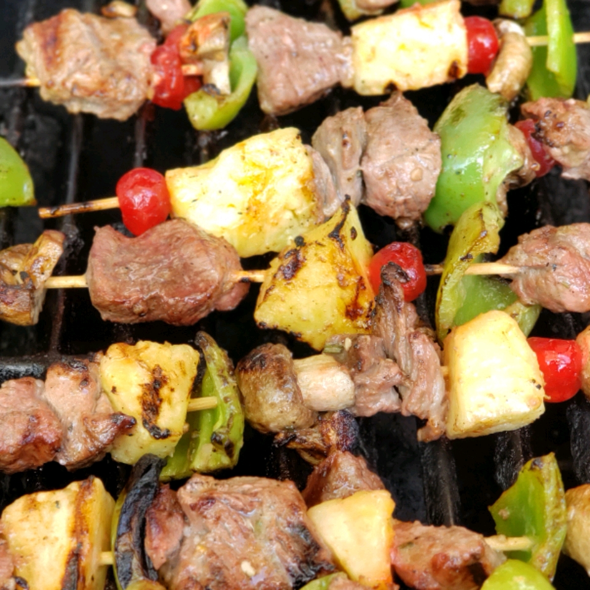

Summer Lamb Kabobs
About the recipe
This is an awesome treat for the grill. We raise grass-fed lambs that are weaned naturally. Experimenting with
lamb recipes over the past 15 years has become a hobby. Lamb and garlic go so well together. In this recipe, the
combination of herbs and spices complement this meat and make a great family-and-friend favorite.
Ingredients
- 5 pounds boneless lamb shoulder, cut into 1 inch pieces
- 6 tablespoons Dijon mustard
- 4 tablespoons white wine vinegar
- 4 tablespoons olive oil
- ½ teaspoon salt
- ½ teaspoon black pepper
- ½ teaspoon chopped fresh rosemary
- ½ teaspoon crumbled dried sage
- 4 cloves garlic, chopped
- 4 green bell peppers, cut into large chunks
- 1 (10 ounce) package whole fresh mushrooms
- 1 (16 ounce) can pineapple chunks, drained with juice reserved
- 1 pint cherry tomatoes
- 4 onions, quartered
- 1 (10 ounce) jar maraschino cherries, drained and juice reserved
- ⅓ cup melted butter or margarine
Directions
- Place lamb in a large bowl.
- In a separate bowl, stir together mustard, vinegar, olive oil, salt, pepper, rosemary, sage, and garlic. Pour over lamb, and mix to coat meat. Cover, and refrigerate overnight.
- Preheat outdoor grill for direct heat.
- Add marinated lamb, fruit, and vegetables to stainless steel or bamboo skewers. Reserve some of the juice from pineapple chunks and cherries.
- In a small bowl, stir together melted butter and splashes of juice from the pineapples and cherries to create a basting sauce.
- Place skewers on preheated grill, and cook about 12 minutes, turning and brushing with butter sauce.